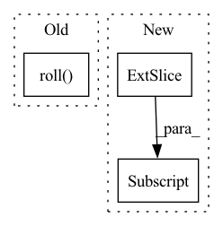

Pattern ID :6040

Before Change
if should_shift:
shift_height, shift_width = int(window_height * shift_size), int(window_width * shift_size)
inputs = tf.roll(inputs, shift=(shift_height * -1, shift_width * -1), axis=[1, 2])
mask = make_window_attention_mask(inputs.shape[1], inputs.shape[2], window_height, window_width, shift_height, shift_width)
else:
mask = None
After Change
if should_shift:
// nn = tf.roll(nn, shift=(shift_height, shift_width), axis=[1, 2])
nn = tf.concat([nn[:, -shift_height:], nn[:, :-shift_height]], axis=1)
nn = tf.concat([nn[:, :, -shift_width:], nn[:, :, :-shift_width]], axis=2)
return nn
In pattern: SUPERPATTERN
Frequency: 3
Non-data size: 3
Instances
Fragment ID: 21024160
Project Name: leondgarse/keras_cv_attention_models
Commit Name: bcd22fc3dc9889d71afdf773b78b74d3211754be
Time: 2022-04-06
Author: leondgarse@gmail.com
File Name: keras_cv_attention_models/swin_transformer_v2/swin_transformer_v2.py
M Class Name: AnonimousClass
N Class Name: AnonimousClass
M Method Name: shifted_window_attention(5)
N Method Name: shifted_window_attention(5)
M Parent Class:
N Parent Class:
M File Name: keras_cv_attention_models/swin_transformer_v2/swin_transformer_v2.py
N File Name: keras_cv_attention_models/swin_transformer_v2/swin_transformer_v2.py
M Start Line: 130
M End Line: 157
N Start Line: 129
N End Line: 163
'>
Before Change
bboxes = augmentations["bboxes"]
if len(bboxes) > 0:
bboxes = torch.tensor(bboxes).roll(dims=1, shifts=1)
//yolo_xywh = coco_to_yolo_tensors(bboxes[..., 1:5], w0=tg_width, h0=tg_height)
//bboxes[..., 1:] = yolo_xywh
out_bboxes = torch.zeros((bboxes.shape[0], 6))
out_bboxes[..., 1:] = bboxes
After Change
sh, sw = img.shape[0:2]
img, ratio, pad = letterbox(img, (tg_height, tg_width), auto=False, scaleup=False)
if labels.size: // normalized xywh to pixel xyxy format
labels[:, 1:] = xywhn2xyxy(labels[:, 1:], ratio[0] * sw, ratio[1] * sh, padw=pad[0], padh=pad[1])
nl = len(labels)
if nl:
labels[:, 1:5] = xyxy2xywhn(labels[:, 1:5], w=img.shape[1], h=img.shape[0], clip=True, eps=1E-3)
'>
Fragment ID: 21024165
Project Name: alessandromondin/yolov5m
Commit Name: 67592bd2ca15b093b59ddd4a11287df9c55f48d0
Time: 2022-11-21
Author: alessandromondin00@gmail.com
File Name: dataset_ultra.py
M Class Name: MS_COCO_2017
N Class Name: MS_COCO_2017
M Method Name: __getitem__(2)
N Method Name: __getitem__(2)
M Parent Class: Dataset
N Parent Class: Dataset
M File Name: dataset_ultra.py
N File Name: dataset_ultra.py
M Start Line: 85
M End Line: 122
N Start Line: 87
N End Line: 133
'>
Before Change
all_lengths = torch.linspace(near, far - resolution, point_num).to(target_device)
lengths = all_lengths + torch.rand((ray_num, point_num)).to(target_device) * resolution
// sampled coords is (row_id, col_id)
ray_raw = ((sampled_coords[..., :-1] * torch.Tensor([-1., 1.]).to(target_device)).roll(shifts = 1, dims = 1) + torch.Tensor([-w / 2, h / 2]).to(target_device)) / focal
ray_raw = torch.sum(torch.cat([ray_raw, -torch.ones(ray_raw.shape[0], 1, dtype = torch.float32).to(target_device)], dim = -1).unsqueeze(-2) * cam_tfs[..., :-1], dim = -1)
// return shape (ray_num, point_num, 3), (ray_num, point_num), rgb(ray_num, rgb), cams(ray_num, ray_dir, ray_t)
pts = cam_tfs[:, :, -1].unsqueeze(-2) + lengths[:, :, None] * ray_raw[:, None, :]
After Change
// return shape (ray_num, point_num, 3), (ray_num, point_num), rgb(ray_num, rgb), cams(ray_num, ray_dir, ray_t)
pts = cam_tf[:, -1] + ray_raw[:, None, :] * lengths[:, :, None]
// ray_raw is of shape (ray_num, 3)
return torch.cat((pts, ray_raw.unsqueeze(-2).repeat(1, point_num, 1)), dim = -1), lengths, output_rgb, torch.cat((cam_tf[:, -1].unsqueeze(0).repeat(ray_raw.shape[0], 1), ray_raw), dim = -1)
def fov2Focal(fov:float, img_width:float) -> float:
return .5 * img_width / np.tan(.5 * fov)
'>
Fragment ID: 21024173
Project Name: enigmatisms/nerf
Commit Name: 926e53d582b75b6d41aa6ffb38432e21706adc6f
Time: 2022-04-14
Author: 984041003@qq.com
File Name: py/utils.py
M Class Name: AnonimousClass
N Class Name: AnonimousClass
M Method Name: validSampler(10)
N Method Name: validSampler(10)
M Parent Class:
N Parent Class:
M File Name: py/utils.py
N File Name: py/utils.py
M Start Line: 73
M End Line: 89
N Start Line: 109
N End Line: 118